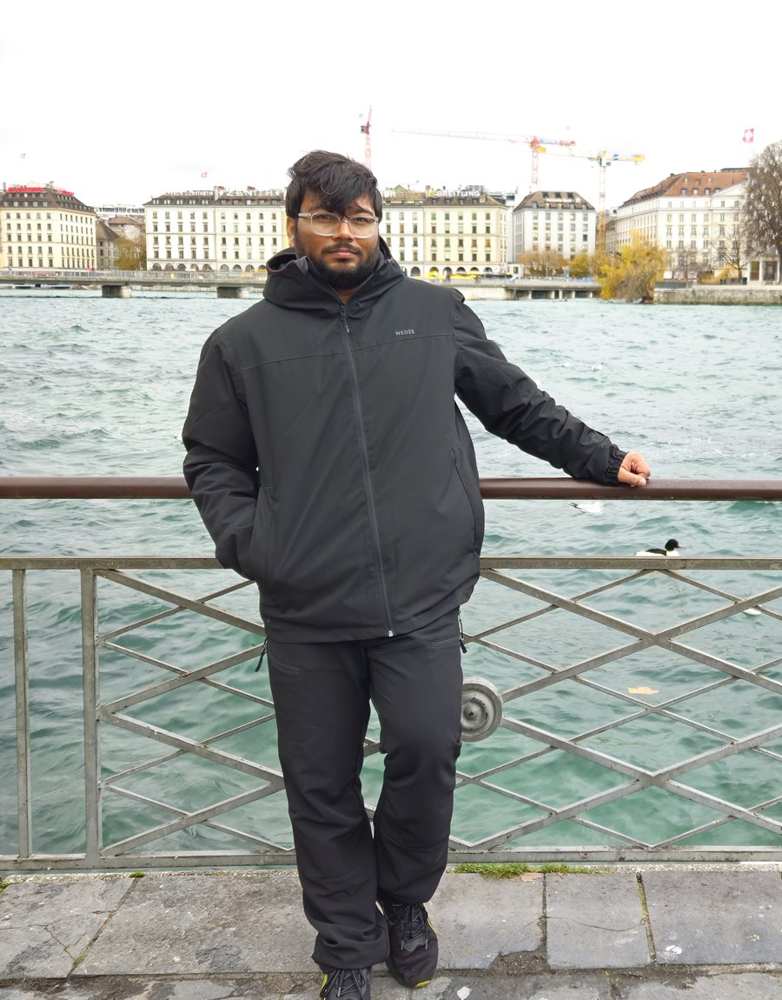

01
Heavy-flavour physics
Measuring D* meson production in proton-proton collisions at 13.6 TeV to study charm production, multiplicity dependence, and hadronisation.
IIT Bombay · ALICE Collaboration
Experimental high-energy physicist
Exploring the strong interaction through heavy-flavour particles, high-energy collisions, and the smallest building blocks of matter.

01 / About
I am a doctoral researcher in Physics at the Indian Institute of Technology Bombay, working within the ALICE Collaboration at CERN.
My research focuses on open-charm production, charm-hadron correlations, and how the initial geometry of colliding nuclei shapes particle production. I combine experimental measurements with simulation and data-driven analysis to study the strong interaction.
At IIT Bombay, I work with Prof. Sadhana Dash. Alongside research, I contribute to scientific software, detector quality control, teaching, and mentoring early-career researchers.
More about my academic journey02 / Research
From charm quarks to nuclear geometry, I investigate how matter behaves in high-energy collisions.
Measuring D* meson production in proton-proton collisions at 13.6 TeV to study charm production, multiplicity dependence, and hadronisation.
Using azimuthal correlations between D* mesons and charged hadrons to probe charm fragmentation and jet-like structures in pp and O–O collisions.
Investigating how alpha clustering and the structure of oxygen and neon nuclei influence particle production, using PYTHIA Angantyr simulations.
C++ / Python / ROOT / ALICE O2Physics / Machine learning / PYTHIA
03 / Selected work
Selected papers and proceedings from my research. The full record, including collaboration publications, is available on INSPIRE.
Deependra Sharma, Arpit Singh and Sadhana Dash
Physical Review C 113, 054903
Deependra Sharma, Arpit Singh, Md. Samsul Islam, Basanta Nandi and Sadhana Dash
Physical Review C 112, 034905
Deependra Sharma for the ALICE Collaboration
Journal of Subatomic Particles and Cosmology, 100562
04 / Academic journey
Physics is a collective pursuit. My work spans research, open scientific software, and supporting the next generation.
View my full CV2021 – Present
Indian Institute of Technology Bombay
Experimental High Energy Physics Group. Doctoral research within the ALICE Collaboration.
2024 – Present
ALICE–STAR India Collaboration
Junior Representative and Physics Board member, supporting early-career researchers and scientific discussions.
2022 – Present
Indian Institute of Technology Bombay
Teaching assistant for physics courses and laboratories; mentoring in ROOT and machine learning for high-energy physics.
2017 – 2019
Indian Institute of Technology Bombay
05 / Scientific exchange
Selected conference talks and posters.
2026 · Talk
Heavy-flavour production and correlations in pp collisions: precision tests of pQCD and hadronization with ALICE.
University of California, Los Angeles2026 · Talk
Study of charm fragmentation and hadronisation via azimuthal correlations in pp collisions at 13.6 TeV with ALICE.
Charm physics & hadronisation2025 · Poster
Multiplicity dependence of D* meson production in pp collisions at 13.6 TeV with ALICE at the LHC.
ALICE Collaboration06 / Get in touch
For research discussions, scientific collaboration,
or simply a shared curiosity about physics.
Department of Physics
Indian Institute of Technology Bombay
Mumbai, India